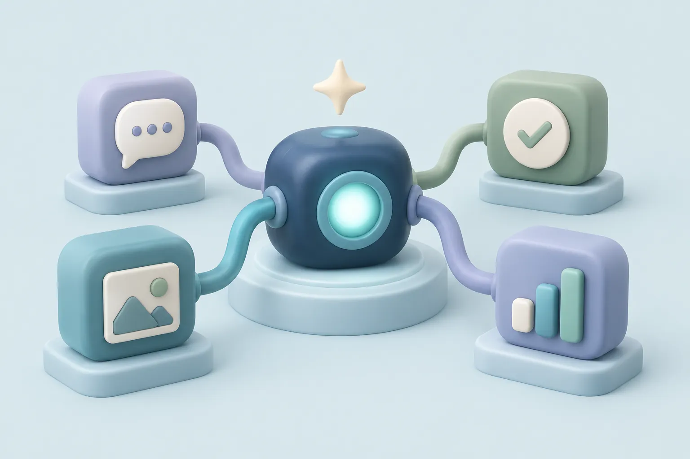
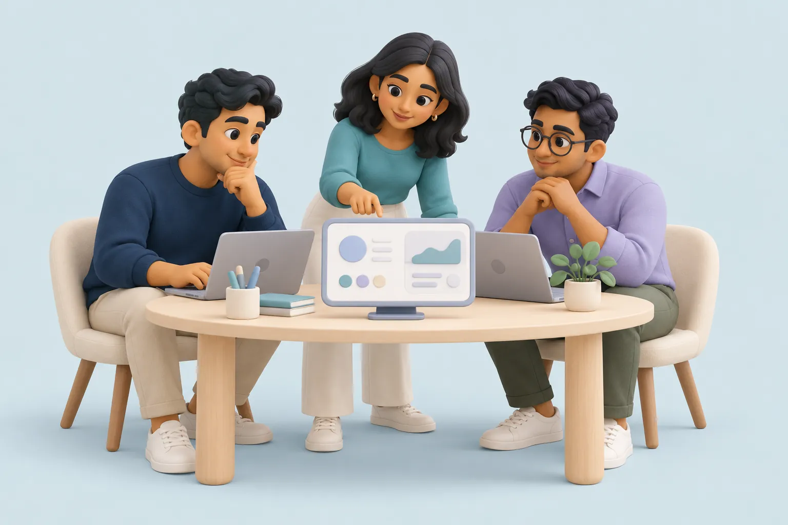
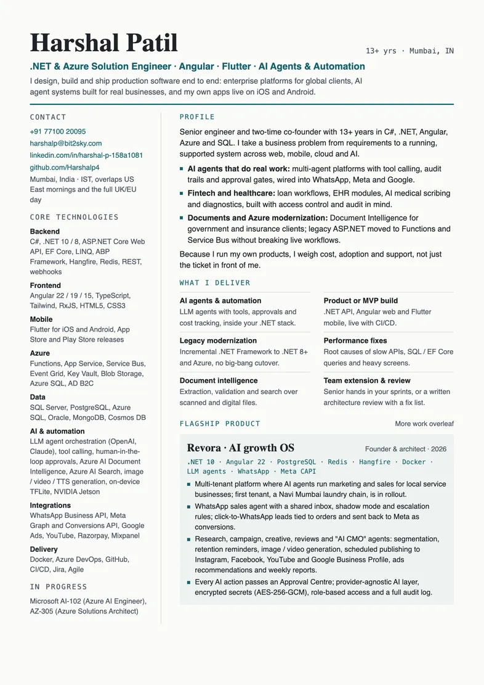

Years of experience
Building software since 2012.
I turn business problems into
software people can use.
Freelance solution engineer and two-time co-founder. I build .NET and Azure platforms, Angular web apps, Flutter mobile apps and AI agents for clients in India, the US, the UK and Europe.
Building software since 2012.
A builder’s view of cost and adoption.
Web · mobile · cloud · AI
.NET APIs, Angular web, Flutter mobile, and agents with tools, approvals, and cost tracking.
Incremental .NET modernization, Azure integration, and fixes for slow APIs, queries, and screens.
Team extension, architecture reviews, document intelligence, and a practical plan for what to fix next.
Explore the products and enterprise systems I’ve helped build.

ILLUSTRATIVE PRODUCT ARTAI agents that help local service businesses run marketing and sales, with a person in control of every action.
The start of Harshal’s software-engineering journey, building the foundations for the work that followed.
Explore the workHighlighted years mark recorded milestones. More stories can be added as the journey grows.
Document management and regulated scanning systems for organizations including HAL, Pune Municipal Corporation, MDIndia, and EMH Cranes.
Projects grouped by focus; individual project dates are not implied.
C# · .NET · ASP.NET Core · EF Core
Angular · TypeScript · RxJS
Azure · Functions · Service Bus
SQL Server · PostgreSQL · Redis
Flutter · iOS · Android
TFLite · MobileFaceNet · Jetson
LLM agents · tool calling · approvals
Document Intelligence · AI Search
Currently working toward Microsoft AI-102 and AZ-305.
Work with me directly for focused assignments, or through Bit2Sky India for full builds.
Team composition is agreed around the needs of each engagement.
Discuss your project
Solution engineering, architecture, and end-to-end product delivery.
A delivery route for full product builds and larger engagements.
US contracting is also available through Bit2Sky Inc. USA.
“Harshal took our slow, fragile platform and made it fast and predictable without a risky rewrite. Clear communication and no surprises.”
“He understood the business problem before writing any code. Our app went from idea to both app stores, and he still supports it.”
“Solid .NET and Azure depth, plus practical AI. The document-processing workflow he built cut hours of manual checking every week.”

Experience, enterprise projects, shipped products, and ways to work together in one concise CV.
Product and MVP builds on .NET, Angular and Flutter; AI agents and automation; legacy .NET modernization to .NET 8+ and Azure; performance fixes for slow APIs and SQL; document intelligence; and architecture reviews. I take hourly work or fixed milestones.
Yes. I work from Mumbai on IST, which overlaps US East Coast mornings and the full UK and European working day. US contracts can also run through Bit2Sky Inc. USA.
Yes. I build LLM agents with tool calling, human approval steps, audit logs and cost tracking, connected to channels such as WhatsApp, Meta and Google. Revora, my own AI growth platform, is built this way on .NET 10 and Angular.
Yes. I move legacy ASP.NET and SQL workloads to .NET 8+ and Azure step by step, using Azure Functions, Service Bus and event-driven designs, without a risky big-bang cutover.
Send a short note about what you are building by email or WhatsApp. I reply with questions, a suggested approach and an estimate with milestones.
Individual freelance, team delivery, or a focused architecture review.
Start a conversationA laptop eases open, the plant sways, and a small star floats. Use it beside your introduction.
Editable GLB + MP4. Pause anytime.